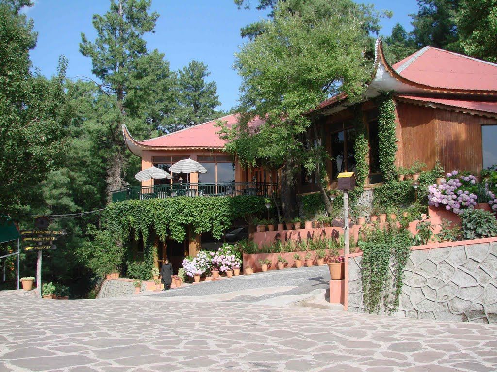

Murree is a charming hill station nestled in the northern part of Pakistan, specifically in the Punjab province. It's situated in the Pir Panjal Range of the Himalayas and is not too far from the capital city, Islamabad. The weather in Murree is a big part of its appeal. It offers a pleasant escape from the heat of the plains during the summer. Summers in Murree are mild, with temperatures ranging from 15°C to 25°C (59°F to 77°F), making it a popular destination for those seeking relief from the scorching heat. Winters, on the other hand, are quite cold, with snowfall often covering the hills and turning Murree into a winter wonderland. Murree is known for its lush, green hills that create a stunning landscape. The hills are covered with thick forests of pine and oak trees, offering beautiful hiking trails and a serene atmosphere. These hills provide breathtaking panoramic views of the surrounding valleys and towns, making it a must-visit destination for nature lovers and those seeking scenic beauty.
Journey to Murree Murree is a great visiting hill station that is located in Pakistan at the outs. From a distance, it looks more of a fantasy city. The place is visited by different people from different nations since it shields one from the sweltering heat. Though I am adventurous, I had never visited any hill station before. However, a few months ago, I planned to visit Murree. I had always heard stories about its beauty. I had always wished for that moment to be in Murree and experience this peaceful environment, and yes, my desire came true.
Well, on that day, we reached Murree with my friend at around 3.00 p.m. to me it was the best day of my life. The journey to Murree was quite different from the one am used to in the plains. Life around Murree is expensive. The cost of the hotels is too high for the ordinary man, but luckily we got a very dark bungalow at a reasonable price. Being too tired, we chose to rest and begin our adventures on the next day. The following morning everyone woke up with anxiety and determination. We woke up early to have a view of Murree. The view was awesome. The area was filled with thick fog and beautiful trees that were filled with enticing flowers. The fog created an enchanting feeling that was utterly incredible. The valleys below gave the area a magnificent scenery since they were filled with green tree. It was utterly tremendous. The place was immensely fascinating, and no words can describe the emotions given by the view of Murree. Though the trip was short, I experienced the wonders that nature holds that make Murree flourish.
The area was all green, below it were streams and brooks that went down the mountains. The mountains were cool, and no amount of the sun heat disturbed us no matter how much it was. Around birds chirped in a rhythm that seemed to be singing welcome songs to us. Some monkeys swayed from tree to tree, seemingly waiting for any visitor to offer them some food. The landscapes were distinctly inspiring, Murree’s neighborhood was satisfying. At Murree, we visited a theme park in Nathia Gali, and it was both wondrous and adventurous. There were many varieties of beautiful flowers and enticing ferns, and the smell of the flowers was pleasing, and I kept breathing in the scent from time to time. The nature of Nathia Gali seemed awakened, it looked like it had a magic touch. To me, this was a very new experience thus I watched everything closely with rapt attention. To sum everything up, Murree is the best place that I have ever visited all my life. Till date, I still consider Murree as a fantastic place.